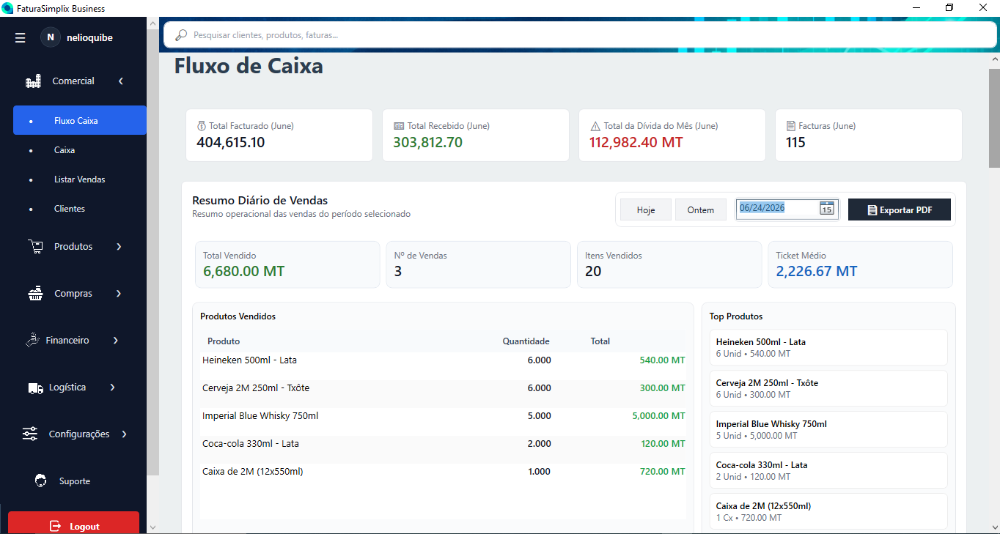
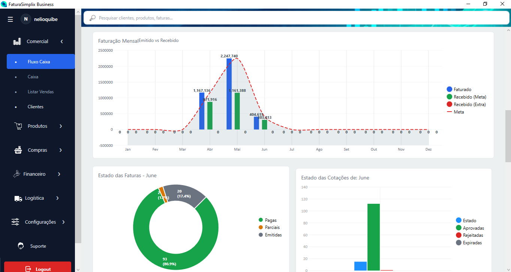
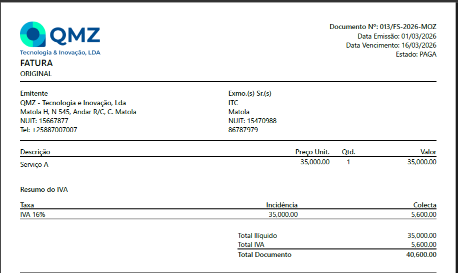

FaturaSimplix Business ERP
ERP de Faturação e Gestão Comercial para Pequenas e Médias Empresas em Moçambique




Em Moçambique, muitas pequenas e médias empresas enfrentam dificuldades na adopção de sistemas de facturação e gestão comercial devido ao custo e à complexidade de algumas soluções empresariais. Processos manuais, utilização de ferramentas isoladas e falta de integração entre operações podem dificultar o controlo das vendas, stock, compras e informação financeira.
Solução Desenvolvida
O FaturaSimplix Business foi concebido como uma solução integrada de gestão empresarial, adaptada às necessidades de pequenas e médias empresas moçambicanas. A plataforma centraliza diferentes processos operacionais, desde vendas e facturação até stock, compras, logística, pagamentos e auditoria.
A solução foi desenvolvida com foco na digitalização de processos, centralização da informação, redução de tarefas manuais e melhoria do controlo operacional, permitindo que diferentes actividades da empresa sejam realizadas dentro de um único sistema.
O Meu Papel no Projeto
Atuei como principal desenvolvedor do FaturaSimplix Business, participando desde a análise das necessidades e definição dos requisitos até ao desenvolvimento, testes, implementação e evolução contínua da solução.
Trabalhei na definição da arquitectura da aplicação, modelação da base de dados, desenvolvimento das regras de negócio, integração entre módulos, implementação de mecanismos de segurança, testes e optimização de desempenho.
O desenvolvimento envolveu também a análise de problemas identificados durante a utilização da aplicação, correcção de defeitos, melhoria da experiência do utilizador e implementação de novas funcionalidades com base nas necessidades dos utilizadores.
Principais Contribuições
- Análise e transformação de necessidades empresariais em funcionalidades do sistema.
- Desenvolvimento da arquitectura e dos principais módulos do ERP.
- Implementação de regras de negócio para processos comerciais e operacionais.
- Modelação e optimização de bases de dados relacionais.
- Desenvolvimento e optimização de consultas SQL.
- Implementação de autenticação, gestão de utilizadores e permissões de acesso.
- Desenvolvimento de funcionalidades de auditoria e rastreabilidade das operações.
- Implementação de testes, debugging e correcção de defeitos.
- Optimização do desempenho e melhoria do carregamento e processamento de dados.
- Desenvolvimento de mecanismos de actualização automática da aplicação.
- Implementação de geração e exportação de documentos em PDF, Excel e XML/SAF-T.
- Evolução contínua da solução com base no feedback e necessidades dos utilizadores.
Principais Aprendizagens
- Desenho de sistemas empresariais com múltiplos módulos.
- Modelação de bases de dados relacionais para cenários reais.
- Implementação de regras de negócio complexas.
- Otimização de consultas SQL e desempenho da aplicação.
- Gestão de permissões e autenticação.
- Conceção de interfaces focadas na produtividade do utilizador.
- Manutenção evolutiva baseada no feedback dos clientes.
Módulos do ERP
- Gestão Comercial
- Gestão de Produtos e Stock
- Gestão de Compras
- Logística
- Facturação
- Pagamentos e Controlo de Dívidas
- Auditoria Fiscal
- Auditoria do Sistema
- Centro de Administração Avançado
Principais Funcionalidades
- Emissão de Cotações, Facturas, Notas de Crédito e Notas de Débito
- POS — Ponto de Venda
- Gestão de Produtos, Lotes e Stock
- Gestão de Compras
- Gestão de Clientes e Fornecedores
- Gestão de Pagamentos e Dívidas
- Dashboard e Indicadores de Gestão
- Gestão de Utilizadores e Permissões
- Auditoria e Rastreabilidade de Operações
- Geração de documentos PDF
- Exportação para Excel
- Exportação XML / SAF-T
- Sistema de Licenciamento
- Actualização automática da aplicação
- Backup e Restauro de Dados
Competências Demonstradas
- Engenharia de Software
- Análise de Sistemas e Requisitos
- Desenvolvimento de Sistemas Empresariais
- Modelação e Gestão de Bases de Dados
- Integração de Módulos e Processos
- Testes e Qualidade de Software
- Optimização de Desempenho
- Digitalização de Processos
- Experiência do Utilizador
- Manutenção e Evolução de Sistemas